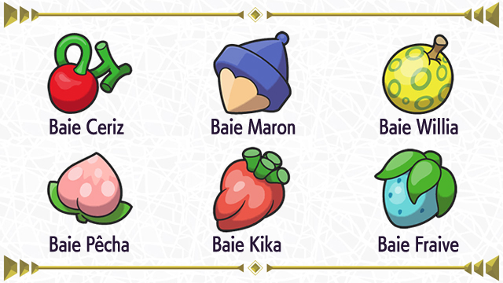
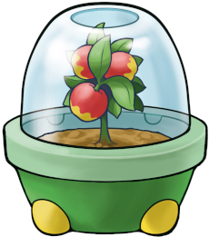
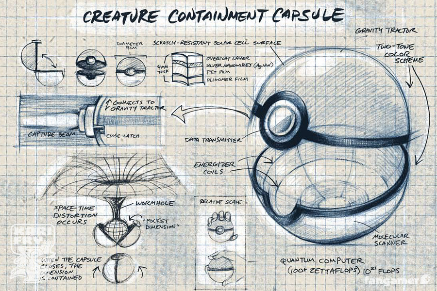
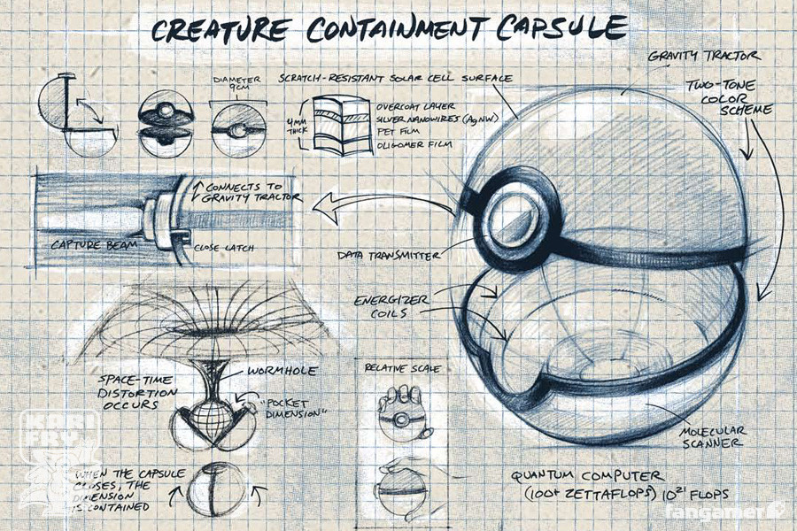
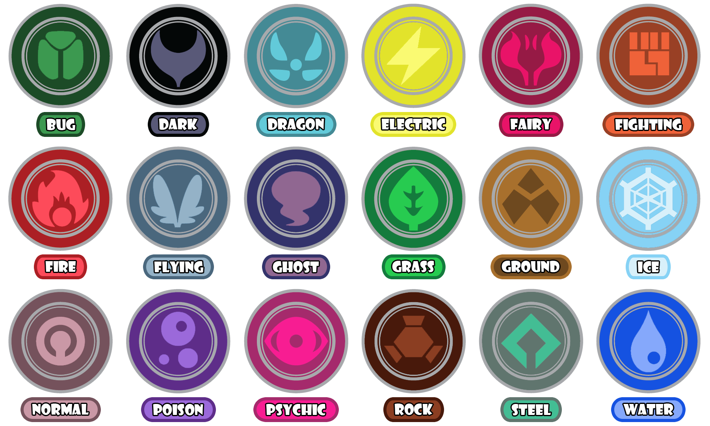

1) Le concept
Les Pokémons, variant du nom d'origine Pocket Monster (PO.c.KE.t.MON.ster) est un concept créé par le japonais Satoshi Tajiri en 1995. L'univers des pokémons est peuplé d'humains ainsi qu'une très grande variété de créatures, les pokémons, qui sont fortement inspirés de divers éléments de notre monde. Cela peut aller d'une souris à capacité électrique au dieu de cet univers, en passant par des créatures fictives comme un renard à 9 queues. La végétation de ce monde (sans compter les pokémons semblables à des plantes) est très simpliste (surement pour ne pas voler la vedette aux pokémons), on voit généralement de l'herbe, des fleurs simples, des arbres. Les seules plantes qui diffèrent de notre monde sont les baies, ce sont des fruits poussant sur diverses plantes, représentant donc la majorité de la flore de ce monde, même si principalement des arbres et des buissons. Ces baies ont de nombreuses utilités : elles servent de nourritures, d'ingrédient pour concocter des potions (agissent principalement comme des soins pour les pokémons) ou des pokéblocs, qui sont comme des friandises pour les pokémons, mais elles sont aussi l'un des composants des pokéballs.
 Les pokéballs sont des objets sphériques qui peuvent s’ouvrir en deux, leur utilité est de capturer des pokémons afin de les apprivoiser. Dans le monde pokémon, les pokémons capturés sont soit considérés comme animaux de compagnie, assistants de travail, ou combattants dans des tournoi pokémon. Ces tournois opposent des dresseurs pokémon faisant des duels généralement avec une équipe de 6 pokémons. Les dresseurs donnent des instructions à leurs pokémons dans le but de mettre ceux adverses hors combat, c'est-à-dire hors d'état de combattre. Cet élément est l'un des points centraux de la plupart des jeux et dessins animés de la franchise.
 

Les Pokémons sont classés dans des catégories appelées type Définissant leur capacité ainsi que leur attaque, ils sont au nombre de 18. Ces types peuvent être comparés à la manière dont l'on classe les espèces vivantes sur terre, les plantes, les champignons, les animaux (qui contiennent les vertébrés et invertébrés, ainsi que leur dérivé). Le fait que les Pokémons ne soit pas tous des animaux justifie le manque de flore "non Pokémons", en permettant l'existence d'écosystèmes très développés. L'impact de l'industrie humaine sur les écosystèmes est même représenté à maintes reprises dans les différentes œuvres Pokémon.
2) Génération
Les Pokémons sont séparés en générations, les générations désignent les Pokémons spécifiques à une région. Ces régions sont associées dans un premier temps aux jeux, mais aussi aux dessins animés et aux jeux de carte (TCG pour Trading Card Game). Le nom génération est souvent contracté en gen suivi d'un numéro désignant la région par rapport à son ordre de parution (gen 1 pour la région de Kanto, gen 7 pour la région d'Alola, etc…).Chaque génération est composée de Pokémon avec un, deux ou trois stages d'évolution. Les Pokémons de même lignée évolutive sont considérés comme de la même « famille » de Pokémons. Parmi ces familles, trois sont considérées comme les starters de leur région. Ces familles partagent plusieurs points communs : elles ont toutes des lignées évolutives à trois stages, ils sont les premiers dans leur pokédex régional, toujours dans l'ordre type plante, type feu, type eau et ils sont les seuls Pokémons que l'on peut choisir dans la plupart des jeux Pokémons classiques (à leur stage de base).Le nombre de Pokémon par génération varie (72 en gen 6, 156 en gen 5), mais on peut considérer une moyenne de 100 Pokémon par génération.